공간 역할 기준으로
군집화하고, 그 결과를 바탕으로 station-hour 수요 예측
분석까지 연결한 1차 통합본이다.업무/상업형, 주거형,
생활·상권 혼합형, 외곽형 같은 공간 역할
기준으로 분류하기 위한 단계였다.bike_change_raw)을
설명 가능한 방식으로 예측하기 위해 공선성 정리, 누수 점검, 시계열 패턴
진단, sample_weight 적용을 거친 Ridge 회귀를 구성했다.train R2=0.726576,
valid R2=0.721155, test R2=0.727374로 split 간
편차가 크지 않은 안정적인 기준 모델로 정리됐다.station-level 공간 역할 분류가 필요했다.업무 중심지인지, 주거지인지,
생활·상권 혼합지인지를 해석하는 근거가 된다.station-day 또는 station-hour 수요 예측으로
연결2023~2024 학습,
2025 테스트k = 5업무/상업형, 주거형,
생활·상권 혼합형, 외곽 주거형station-level업무/상업형,
주거형, 생활·상권 혼합형, 외곽형
같은 공간 역할 기준으로 분류| 피처 1 | 피처 2 |
|---|---|
오전 반납 비율 (arrival_7_10_ratio) |
점심 반납 비율 (arrival_11_14_ratio) |
저녁 반납 비율 (arrival_17_20_ratio) |
아침 순유입 (morning_net_inflow) |
저녁 순유입 (evening_net_inflow) |
최근접 지하철 거리 (subway_distance_m) |
300m 내 버스정류장 수 (bus_stop_count_300m) |
서울 열린데이터광장 공공자전거 이용정보서울 열린데이터광장 공공자전거 대여소 정보2023~2025 공통 운영 대여소2,896,795건2,663,938건232,857건 (8.04%)이용시간/거리 비정상값,
즉시 반납, 공통 운영 대여소 기준 밖 데이터
제거가 주요 정제 요인이었다.
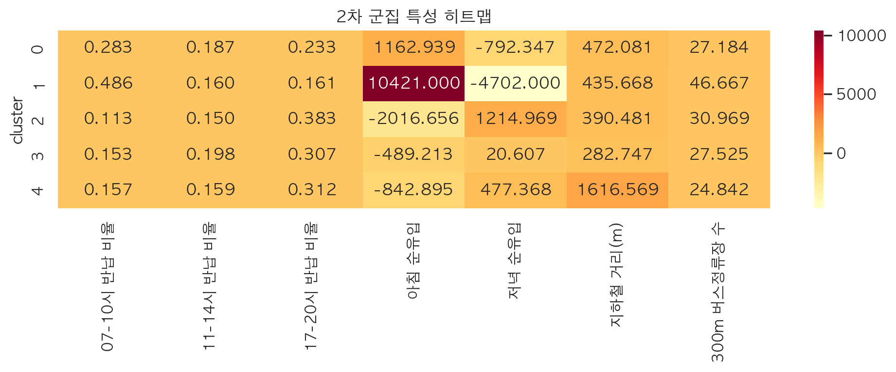
k = 5 군집이 완전히 겹치지 않고, 역할별로
분리되는 경향이 있음을 보여준다.
분리 정도, 히트맵은 무엇이 다른지를
설명하는 역할이다.

SB타워 앞,
역삼지하보도 7번출구 앞수서역 5번출구,
포스코사거리(기업은행)청담역 13번 출구 앞,
현대아파트 정문 앞더시그넘하우스 앞,
세곡동 사거리역할은 설명하지만, 특정 시점의 수요
변화량을 직접 예측하지는 못한다.어느 시간대에 어떤 대여소의 자전거 수요 변화가 커질지를
알아야 재배치 판단에 쓸 수 있다.bike_change_raw)station-hour자전거 수요 변화량을
설명하고 예측bike_change_raw)을 예측하는
해석 가능한 회귀모델을 만드는 것이다.sample_weight 적용2023~20242025sample_weight가 반영된 구조를 사용bike_change_raw)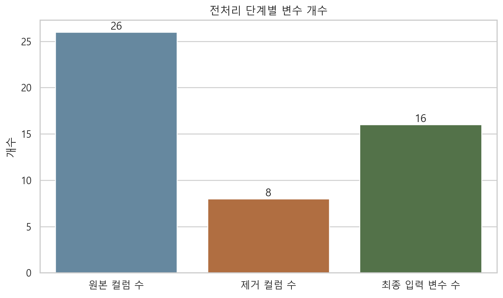
| 컬럼 | 의미 | 컬럼 | 의미 |
|---|---|---|---|
대여소 고유 ID (station_id) |
대여소 식별자 | 풍속 (wind_speed) |
기상 변수 |
시간대 (hour) |
0~23시 시간 구간 | 대여소 군집 번호 (cluster) |
군집화 결과 라벨 |
해당 시점 대여 건수 (rental_count) |
해당 시간대 대여량 | 자전거 수요 변화량 (bike_change_raw) |
예측 대상 타깃 |
요일 정보 (weekday) |
월~일 인코딩 값 | 직전 시점 수요 변화량 (bike_change_lag_1) |
직전 시점의 bike_change_raw |
월 정보 (month) |
월 단위 계절성 정보 | 직전 24시간 평균 변화량 (bike_change_rollmean_24) |
직전 24시간 평균 |
공휴일 여부 (holiday) |
공휴일 여부 표시 | 직전 24시간 변동성 (bike_change_rollstd_24) |
직전 24시간 표준편차 |
기온 (temperature) |
기상 변수 | 직전 168시간 평균 변화량
(bike_change_rollmean_168) |
직전 168시간 평균 |
습도 (humidity) |
기상 변수 | 직전 168시간 변동성 (bike_change_rollstd_168) |
직전 168시간 표준편차 |
강수량 (precipitation) |
기상 변수 | 학습 가중치 (sample_weight) |
월별 유사패턴 반영 가중치 |
bike_change_raw)과 계절조정 수요
변화량(bike_change_deseasonalized)의 절대 상관계수는
0.9349로, 사실상 같은 정보를 나눠 가진 수준이었다.| 컬럼 A | 컬럼 B | 상관계수 | 절대값 |
|---|---|---|---|
자전거 수요 변화량 (bike_change_raw)
|
계절조정 수요 변화량 (bike_change_deseasonalized)
|
0.934864 | 0.934864 |
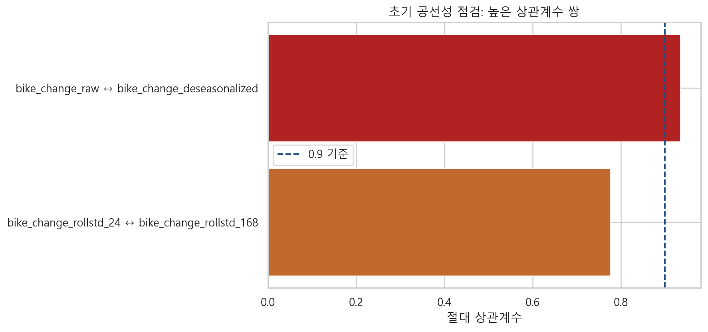
| 제거 컬럼 | 원인 | 조치 |
|---|---|---|
계절조정 수요 변화량 (bike_change_deseasonalized) |
자전거 수요 변화량과 상관계수 0.9349 | 중복 타깃 계열 변수 제거 |
계절조정 대여 건수 (rental_count_deseasonalized) |
원 변수와 계절조정 변수가 함께 존재 | 설명력이 겹치는 파생변수 제거 |
추세 파생변수
(bike_change_trend_1_24 / bike_change_trend_24_168) |
수요 변화량 계열 추세 파생변수 중복 | 공선성 완화를 위해 제거 |
장기 시차 변수
(bike_change_lag_24 / bike_change_lag_168) |
다중 시차 변수 과다 | 대표 lag만 남기고 제거 |
계절 평균 요약값 (seasonal_mean_2023) |
계절성 요약값과 월·시간 변수 의미 중첩 | 대표성 낮은 요약 변수 제거 |
행정동 코드 (mapped_dong_code) |
지역 코드형 변수로 군집 변수와 역할 중첩 | 모델 단순화를 위해 제거 |
bike_change_rollstd_24)과 직전 168시간
변동성(bike_change_rollstd_168)의
0.7772였다.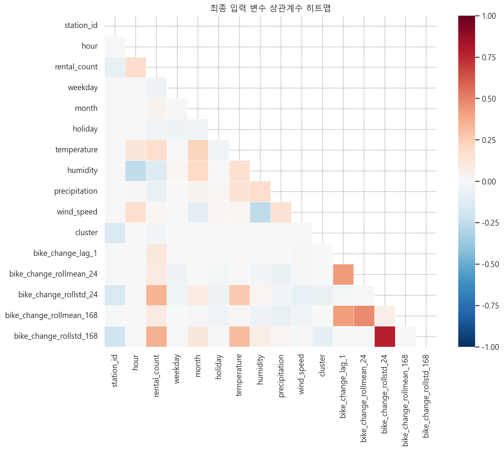
타깃 누수, 미래정보 혼입,
잘못된 분할이다.bike_change_lag_1), 직전 24시간
평균·표준편차, 직전 168시간 평균·표준편차는 모두 과거값 기반 파생변수라
생성 로직을 검증했다.| 점검 변수 | 불일치 건수 | 과거값만 사용 검증 |
|---|---|---|
| 직전 시점 수요 변화량 | 0 | 예 |
| 최근 24시간 평균 변화량 | 0 | 예 |
| 최근 24시간 변동성 | 0 | 예 |
| 최근 168시간 평균 변화량 | 0 | 예 |
| 최근 168시간 변동성 | 0 | 예 |
| 데이터 구간 | 시작일 | 종료일 | 행 수 |
|---|---|---|---|
| 학습 | 2023-01-01 | 2023-12-31 | 1410360 |
| 검증 | 2024-01-01 | 2024-12-31 | 1414224 |
| 테스트 | 2025-01-01 | 2025-12-31 | 1410360 |
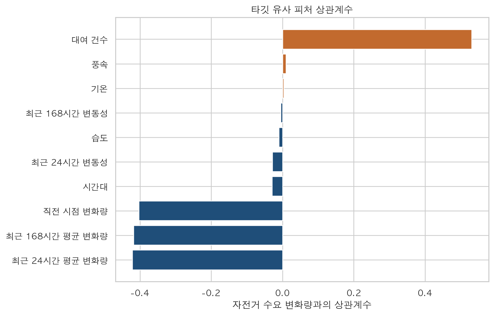
rental_count)의 2023-05와
2023-06은 corr=0.9947,
NRMSE=0.1074로 매우 유사했다.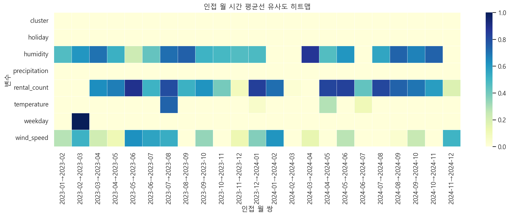
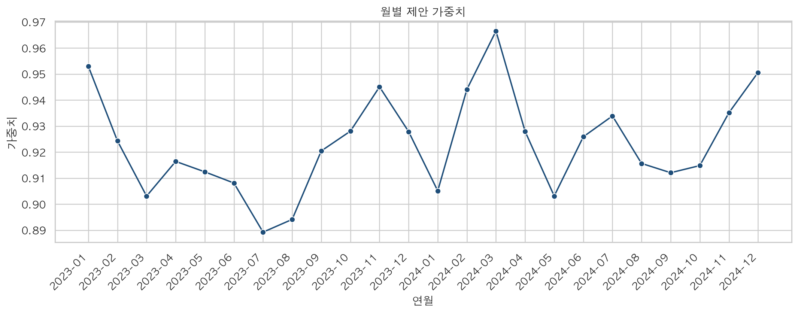
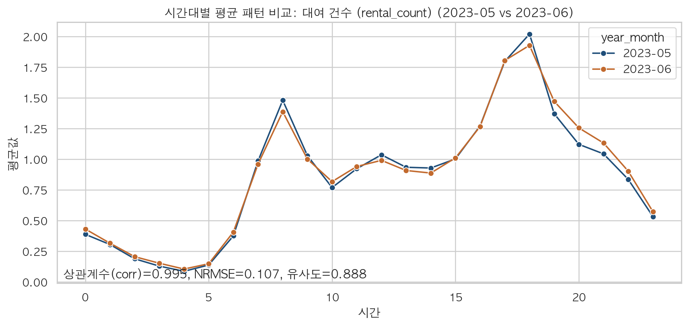
train=2023, valid=2024,
test=2025Ridge(alpha=2.0)sample_weight 적용RMSE, MAE, R2| 분할 | RMSE | MAE | R² |
|---|---|---|---|
| 학습 | 0.726203 | 0.481299 | 0.726576 |
| 검증 | 0.734183 | 0.480287 | 0.721155 |
| 테스트 | 0.649735 | 0.433503 | 0.727374 |
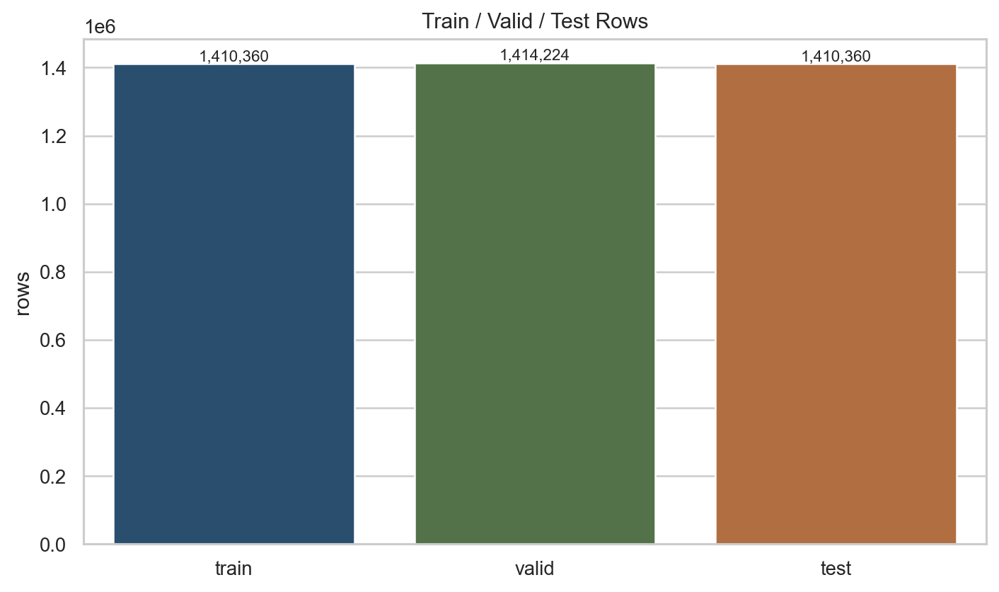
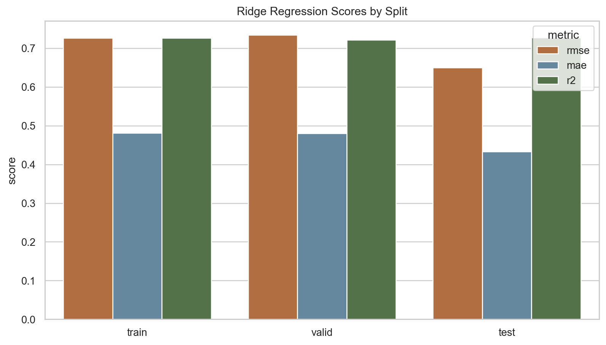
train R2=0.726576, valid R2=0.721155,
test R2=0.727374로 split 간 차이가 크지 않았다.rental_count),
직전 시점 수요 변화량(bike_change_lag_1), 직전 24시간 평균
변화량(bike_change_rollmean_24), 직전 168시간 평균
변화량(bike_change_rollmean_168) 순으로 영향이 컸다.| 변수 | 계수 | 절댓값 |
|---|---|---|
| 대여 건수 | 1.040080 | 1.040080 |
| 직전 시점 변화량 | -0.381124 | 0.381124 |
| 최근 24시간 평균 변화량 | -0.369743 | 0.369743 |
| 최근 168시간 평균 변화량 | -0.319655 | 0.319655 |
| 최근 168시간 변동성 | -0.218623 | 0.218623 |
| 시간대 | -0.214313 | 0.214313 |
| 최근 24시간 변동성 | -0.201558 | 0.201558 |
| 습도 | 0.057119 | 0.057119 |
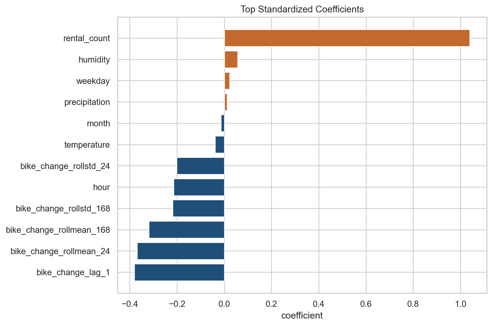
강한 과거 이력 feature + 반복되는 시계열 패턴의 영향이
크다고 해석했다.| 분할 | 기준 RMSE | 재실험 RMSE | 기준 R² | 재실험 R² | R² 변화 |
|---|---|---|---|---|---|
| 검증 | 0.354179 | 0.993907 | 0.935107 | 0.488971 | -0.446136 |
| 테스트 | 0.317459 | 0.911335 | 0.934917 | 0.463648 | -0.471269 |
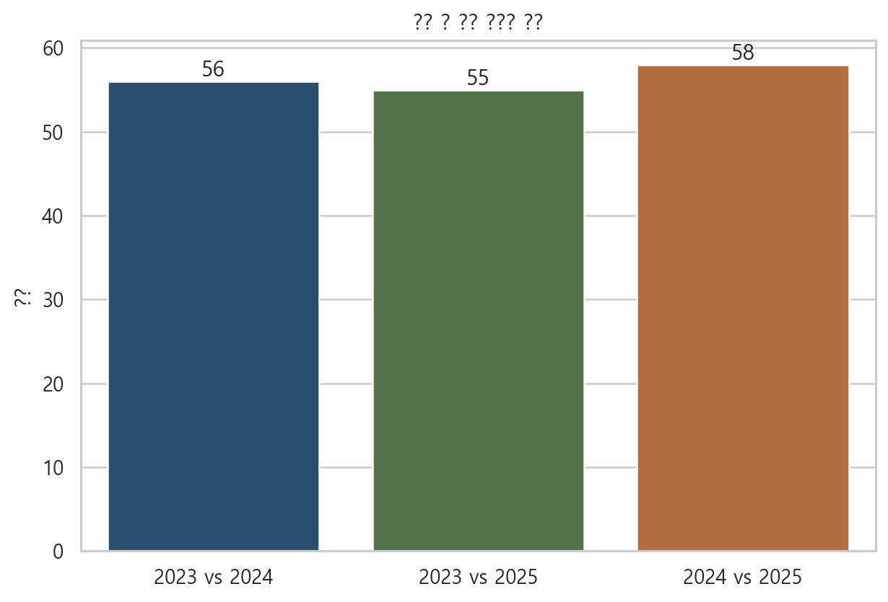
cluster 1 군집은 상대적으로 성능이 낮아 군집 특화 피처
보강이 필요한 구간으로 볼 수 있다.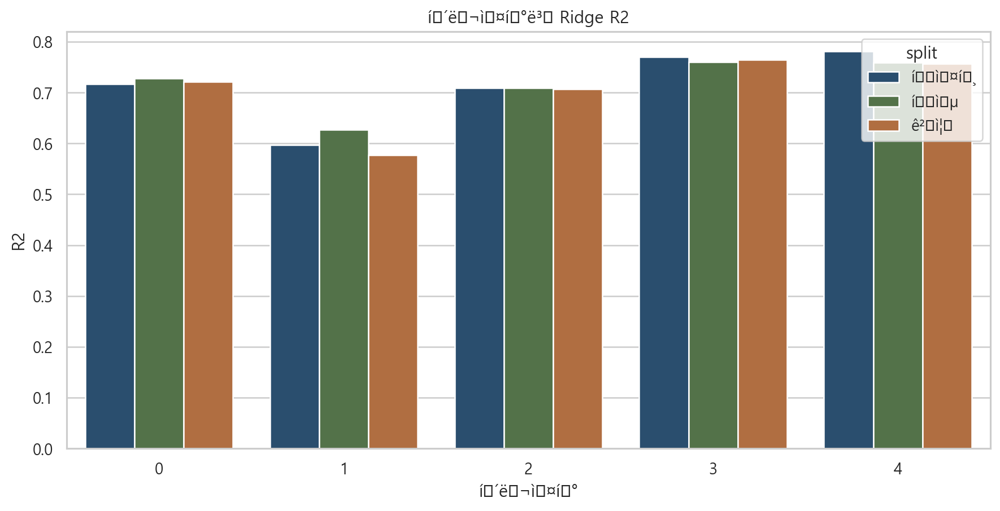
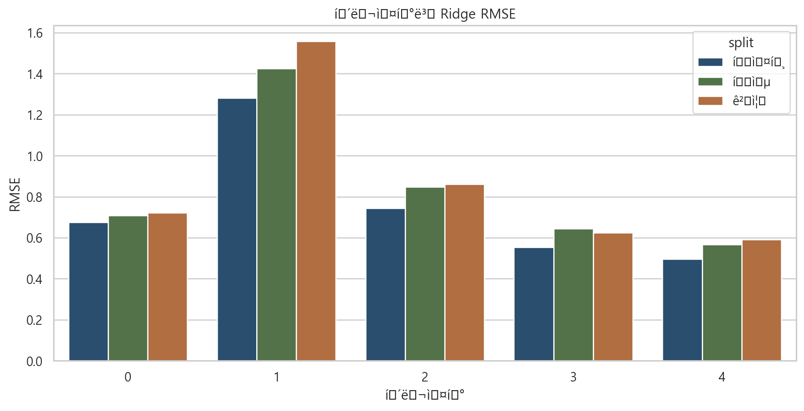
공간 역할
기준으로 해석할 수 있는 구조를 확보했다.설명 가능한 Ridge 기준 모델을 구축했다.검증 R² 0.721155,
테스트 R² 0.727374 수준의 안정적이고 해석 가능한 기준
모델로 정리할 수 있었다.| 분할 | RMSE | MAE | R² |
|---|---|---|---|
| 학습 | 0.726203 | 0.481299 | 0.726576 |
| 검증 | 0.734183 | 0.480287 | 0.721155 |
| 테스트 | 0.649735 | 0.433503 | 0.727374 |